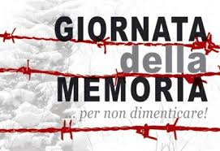

dopoguerra
altre pagine
pagina iniziale
Foibe
deportazione
gennaio
Le biblioteche Libero Della Briotta di Ponte in Valtellina e Faccinelli di Chiuro propongono per “Il giorno del ricordo”, che commemora le vittime dei massacri delle foibe, uno spettacolo teatrale per ricordare e far riflettere.
La scelta è caduta su “1945, L'altra primavera”, la storia di capovolge, ma in fondo si ripete. Lo spettacolo andrà in scena domenica 9 febbraio alle 21 al cinema teatro Vittoria di Ponte con Katia Cozzarin, Piera Dattoli, Grazia Gianatti, Lucia Invernizzi e Carlo Pelucchi. L'opera della compagnia teatrale “CapitoloPrimo” è uno spettacolo in forma di lettura scenica che ha quale tema centrale la sofferenza umana originata dall'insensatezza della guerra e dell'odio che tutti ci accomuna, al di là dell'appartenenza a gruppi politici, etnici, religiosi. Lo spettacolo prende avvio dai ricordi di una testimone del territorio, che ha vissuto in prima persona i drammatici eventi. Sarà poi la voce narrante di un attore, voce della “Storia” ufficiale a condurre lo spettatore attraverso le vicende che si sviluppano dal primo dopoguerra agli anni '50.
Sulla voce della storia si innesteranno le testimonianze di episodi chiave avvenuti negli anni 1920, 1941, 1943, 1945. Episodi così drammaticamente umani vissuti da chi, da entrambe le parti, è stato vittima di un cieco nazionalismo che tante ombre ha gettato sul secolo scorso. Nella parte finale tornerà la voce della testimone che lascerà lo spettatore con una riflessione sul dolore universale dell'esilio e sul dovere del ricordo. Ingresso libero, inizio dello spettacolo alle 21.
